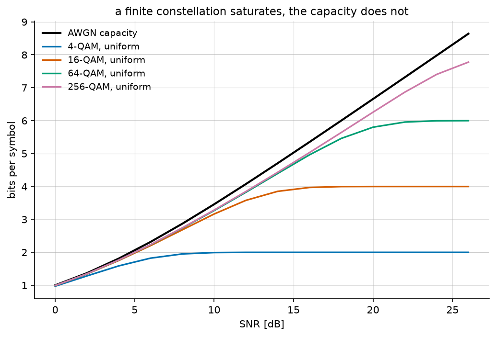
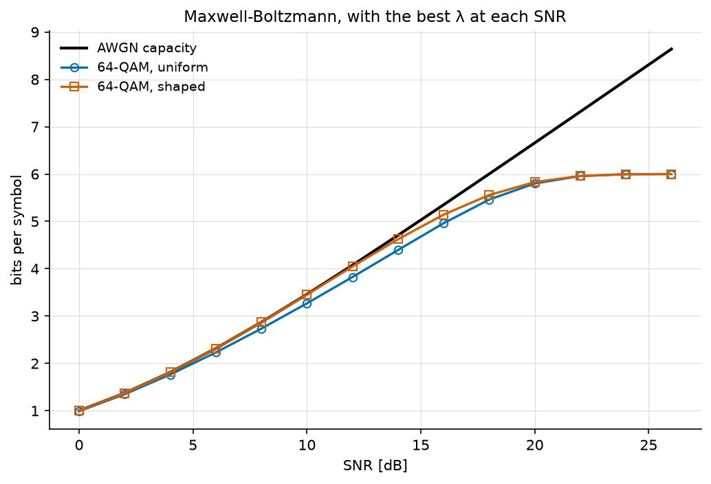
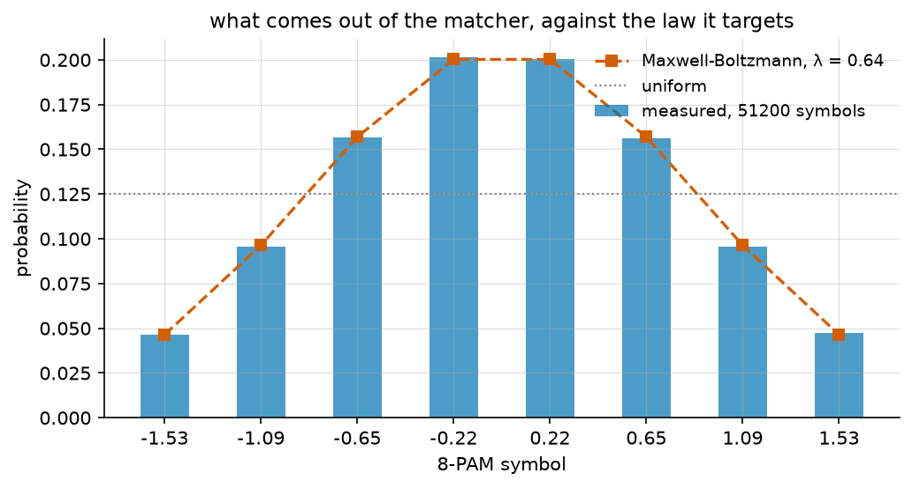

Probabilistic Shaping#
A uniform QAM does not reach the capacity of the AWGN channel, and the reason is not the receiver: it is the distribution of the transmitted symbols. Probabilistic shaping changes that distribution, and this tutorial follows the argument from the limit down to the block that produces it.
Note
Before you start. Monte Carlo Simulation over AWGN Channel introduced the chain and the error rate. Here nothing is simulated for most of the page – the quantities are information-theoretic and computed in closed form.
What you’ll learn:
Why the AWGN capacity is reached by a Gaussian input, and what that costs a finite constellation.
How the Maxwell-Boltzmann law closes part of that gap, and how much.
How a distribution matcher produces a non-uniform law from uniform bits, and what a finite block costs in rate.
Where the whole thing sits in a real chain, and why the metric changes name when it gets there.
The AWGN Channel and its Capacity#
The channel is
and under a power constraint \(\mathbb{E}[|X|^2] \leq P\) its capacity is
The input that reaches it is Gaussian. The short reason is that \(I(X;Y) = h(Y) - h(Y|X) = h(Y) - h(N)\), so maximizing the mutual information means maximizing the differential entropy of \(Y\) at a fixed variance – and the Gaussian is the maximum-entropy law at fixed variance.
"""Why probabilistic shaping, from the capacity down to a matcher.
Run from this directory: it writes the tutorial's figures and diagrams
into ../../docs/tutorials/.
"""
import matplotlib.pyplot as plt
import numpy as np
from scipy.optimize import minimize_scalar
from comnumpy.core import Sequential
from comnumpy.core.capacity import (awgn_capacity, bicm_capacity,
constellation_capacity)
from comnumpy.core.generators import SymbolGenerator
from comnumpy.core.shaping import (AmplitudeMapper, ConstantCompositionMatcher,
DistributionMatcher, distribution_entropy,
maxwell_boltzmann)
from comnumpy.core.utils import Constellation
from comnumpy import style
style.use()
img_dir = "../../docs/tutorials/img/"
mermaid_dir = "../../docs/tutorials/mermaid/"
snr_dB = np.arange(0, 27, 2)
snr = 10 ** (snr_dB / 10)
# --- 1. the limit ----------------------------------------------------
# Under a power constraint the Gaussian input maximizes the mutual
# information, and the value it reaches is the capacity.
capacity = awgn_capacity(snr)
print(f"AWGN capacity at 20 dB: {awgn_capacity(100.0):.2f} bit/symbol")
Why a Uniform QAM Is Not Optimal#
A real transmitter does not send a Gaussian. It sends one of \(M\)
constellation points, and by default it sends them equiprobably. The rate is
then the mutual information \(I(X;Y)\) of that discrete input, which
constellation_capacity() evaluates:
# --- 2. what a uniform QAM reaches -----------------------------------
orders = (4, 16, 64, 256)
uniform = {}
for order in orders:
uniform[order] = Constellation("QAM", order).metrics(
snr_dB, per="symbol", metrics=("mi",))["mi"]
fig, ax = plt.subplots(figsize=(7, 4.8))
ax.plot(snr_dB, capacity, "k", lw=2, label="AWGN capacity")
for order in orders:
ax.plot(snr_dB, uniform[order], label=f"{order}-QAM, uniform")
ax.axhline(np.log2(order), color="0.85", lw=0.8, zorder=0)
ax.set_xlabel("SNR [dB]")
ax.set_ylabel("bits per symbol")
ax.set_title("a finite constellation saturates, the capacity does not")
ax.legend()
ax.grid(True, alpha=0.4)
plt.tight_layout()
plt.savefig(f"{img_dir}/probabilistic_shaping_fig1.png")
header = "\nSNR capacity"
for order in orders:
header += f" {order:>3d}-QAM"
print(header)
for index in range(0, len(snr_dB), 4):
line = f"{snr_dB[index]:3d} dB {capacity[index]:8.2f}"
for order in orders:
line += f" {uniform[order][index]:9.2f}"
print(line)
{kind=link}

SNR capacity 4-QAM 16-QAM 64-QAM 256-QAM
0 dB 1.00 0.97 0.99 0.99 0.99
8 dB 2.87 1.95 2.68 2.73 2.74
16 dB 5.35 2.00 3.97 4.96 5.03
24 dB 7.98 2.00 4.00 6.00 7.40
Two things are visible, and they are different.
A finite constellation saturates: \(I(X;Y) \leq H(X) \leq \log_2 M\), so 4-QAM stops at 2 bits whatever the SNR, and the capacity keeps climbing. That part is fixed by using a bigger constellation.
The second is the one shaping is about. Even below saturation, the uniform curve sits below the capacity – 256-QAM reaches 5.03 bits at 16 dB where the channel offers 5.35, and it does so with sixteen times the points of the 4-QAM that is already saturated there. Enlarging the constellation buys the first part and not the second, because a uniform law on a square grid is not the Gaussian the channel wants.
Probabilistic Shaping#
Instead of moving the points, change how often each is sent: the inner ones more, the outer ones less. The natural law is Maxwell-Boltzmann,
which is the maximum-entropy law on the constellation at a given average energy – the discrete counterpart of the argument that made the Gaussian optimal. The parameter \(\lambda\) sets the strength: \(\lambda = 0\) is uniform, and larger values concentrate the probability at the centre.
How to choose it? Either solve for a target average power \(\sum_i P_X(x_i)|x_i|^2 = P\), a scalar problem, or optimize it directly for the rate, \(\lambda^{*} = \arg\max_\lambda I(X;Y)\). The second is what the figure below does, at every SNR.
One precaution matters more than it looks. Shaping lowers the average energy, so a shaped constellation compared as it stands would simply be a quieter one. The constellation is therefore rescaled back to unit power before the mutual information is computed: the comparison is at equal transmit power, which is the only comparison that means anything.
# --- 3. shaping the 64-QAM -------------------------------------------
# The Maxwell-Boltzmann law is the maximum-entropy law at a given energy.
# Shaping lowers the average energy, so the constellation is rescaled
# back to unit power: the comparison below is at equal transmit power,
# which is the only comparison that means anything.
qam64 = np.asarray(Constellation("QAM", 64))
def shaped_rate(lam, value):
"""Mutual information of a Maxwell-Boltzmann 64-QAM at one SNR."""
law = maxwell_boltzmann(qam64, lam=lam)
energy = float(law @ np.abs(qam64) ** 2)
return float(constellation_capacity(qam64 / np.sqrt(energy), value, px=law))
# lambda is unbounded above -- at low SNR the best law collapses onto the
# innermost points, i.e. onto a smaller constellation -- so the entropy of
# the winning law is reported beside it, which is the readable quantity.
best_lam = np.zeros(snr.size)
best_entropy = np.zeros(snr.size)
shaped = np.zeros(snr.size)
for index, value in enumerate(snr):
search = minimize_scalar(lambda lam, v=value: -shaped_rate(lam, v),
bounds=(0.0, 12.0), method="bounded",
options={"xatol": 1e-4})
best_lam[index] = search.x
best_entropy[index] = distribution_entropy(
maxwell_boltzmann(qam64, lam=search.x))
shaped[index] = shaped_rate(search.x, value)
fig, ax = plt.subplots(figsize=(7, 4.8))
ax.plot(snr_dB, capacity, "k", lw=2, label="AWGN capacity")
ax.plot(snr_dB, uniform[64], "o-", fillstyle="none", label="64-QAM, uniform")
ax.plot(snr_dB, shaped, "s-", fillstyle="none", label="64-QAM, shaped")
ax.set_xlabel("SNR [dB]")
ax.set_ylabel("bits per symbol")
ax.set_title("Maxwell-Boltzmann, with the best $\\lambda$ at each SNR")
ax.legend()
ax.grid(True, alpha=0.4)
plt.tight_layout()
plt.savefig(f"{img_dir}/probabilistic_shaping_fig2.png")
print("\nSNR lambda H(P_X) uniform shaped capacity gap closed")
for index in range(0, len(snr_dB), 2):
gap = capacity[index] - uniform[64][index]
closed = (shaped[index] - uniform[64][index]) / gap if gap > 1e-6 else 0.0
print(f"{snr_dB[index]:3d} dB {best_lam[index]:8.3f} {best_entropy[index]:8.3f} "
f"{uniform[64][index]:9.3f} {shaped[index]:9.3f} "
f"{capacity[index]:10.3f} {100 * closed:9.0f} %")
# What the shaping is worth, read as the SNR the two need for one rate.
target = 4.0
snr_uniform = np.interp(target, uniform[64], snr_dB)
snr_shaped = np.interp(target, shaped, snr_dB)
print(f"\nto carry {target:.0f} bit/symbol: uniform {snr_uniform:.2f} dB, "
f"shaped {snr_shaped:.2f} dB, saving {snr_uniform - snr_shaped:.2f} dB")
{kind=link}

SNR lambda H(P_X) uniform shaped capacity gap closed
0 dB 6.022 3.896 0.992 1.000 1.000 100 %
4 dB 4.779 4.228 1.765 1.812 1.812 100 %
8 dB 3.350 4.721 2.735 2.868 2.870 99 %
12 dB 2.072 5.287 3.825 4.047 4.075 89 %
16 dB 1.048 5.757 4.961 5.142 5.351 46 %
20 dB 0.318 5.974 5.801 5.830 6.658 3 %
24 dB 0.016 6.000 5.996 5.996 7.978 0 %
to carry 4 bit/symbol: uniform 12.61 dB, shaped 11.84 dB, saving 0.77 dB
Read the lambda column against the last one. Where the constellation is
comfortably larger than the rate the channel can carry, shaping closes almost
the whole gap: at 8 dB the shaped 64-QAM reaches 2.868 bits against a capacity
of 2.870. Where the constellation is saturated, \(\lambda^{*}\) falls to
zero and shaping has nothing left to give – at 24 dB the best law is the
uniform one, and the remaining 2 bits of gap need a bigger constellation, not
a better distribution.
In between is where a link actually operates, and there the saving is real: 0.77 dB of SNR to carry 4 bits per symbol. The asymptotic value for a dense constellation is 1.53 dB, the shaping gain of a sphere over a cube.
The rest of the page works at one operating point, 18 dB, and on the law that lives there:
# The law the matcher will have to produce, at the SNR the chain below
# operates at. Probabilistic amplitude shaping shapes the *amplitudes*
# and leaves the signs uniform, so the object the matcher works on is the
# positive half of the PAM constellation -- four magnitudes for an 8-PAM,
# the sign being the bit a systematic code supplies.
middle = int(np.argmin(np.abs(snr_dB - 18)))
lam = float(best_lam[middle])
law = maxwell_boltzmann(qam64, lam=lam)
pam8 = np.sort(np.real(np.asarray(Constellation("PAM", 8))))
amplitudes = np.unique(np.abs(pam8))
amplitude_law = maxwell_boltzmann(amplitudes, lam=lam)
print(f"\nat {snr_dB[middle]} dB: lambda = {lam:.3f}, "
f"H(amplitudes) = {distribution_entropy(amplitude_law):.3f} bits")
at 18 dB: lambda = 0.640, H(amplitudes) = 1.830 bits
Distribution Matching#
The law is one thing. A transmitter is fed an equiprobable bit stream, so something has to turn uniform bits into symbols with that law, invertibly:
Constant composition distribution matching does it by fixing the composition. On a block of length \(n\), symbol \(i\) appears exactly \(n_i\) times, so every block has the same empirical law by construction, and the matcher is an enumeration of the arrangements. There are
of them, so the block carries \(k = \lfloor \log_2 N \rfloor\) bits and the rate is \(k/n\). As \(n\) grows, \(k/n \to H(X)\); at finite \(n\) it falls short, and that shortfall is the rate loss.
# --- 4. generating that law from uniform bits ------------------------
# The law is one thing, producing it from an equiprobable bit stream is
# another. A constant-composition matcher fixes the number of times each
# symbol appears in a block and enumerates the arrangements.
print("\n n composition k/n H(X) rate loss")
for n in (16, 64, 256, 1024):
matcher = ConstantCompositionMatcher(amplitudes, distribution=amplitude_law,
length=n)
entropy = distribution_entropy(amplitude_law)
counts = []
for count in matcher.composition:
counts.append(int(count))
print(f"{n:4d} {str(tuple(counts)):36s} "
f"{matcher.rate:6.3f} {entropy:8.3f} {matcher.rate_loss:10.3f}")
n composition k/n H(X) rate loss
16 (6, 5, 3, 2) 1.500 1.830 0.383
64 (26, 20, 12, 6) 1.688 1.830 0.138
256 (103, 80, 49, 24) 1.781 1.830 0.048
1024 (410, 321, 198, 95) 1.815 1.830 0.015
The rate loss falls roughly as \(\log_2(n)/n\), so it is a matter of
block length: 0.38 bit per symbol at \(n = 16\), 0.015 at
\(n = 1024\). Long blocks cost latency and arithmetic instead, which is
what the other matchers – enumerative sphere shaping, multiset-partition DM
– exist to trade differently. The library ships
SphereShaper for the first.
From Theory to a Chain: PAS and GMI#
The matcher shapes amplitudes, and a QAM symbol is an amplitude and a sign. Probabilistic amplitude shaping puts the two together: the matcher produces the shaped amplitudes, the signs stay uniform, and the parity bits of a systematic FEC code supply them – which is why the shaping and the coding compose instead of fighting.
# --- 5. where it goes in a chain -------------------------------------
# Probabilistic amplitude shaping: the matcher shapes the amplitudes, the
# signs stay uniform, and a systematic code's parity bits become signs.
matcher = ConstantCompositionMatcher(amplitudes, distribution=amplitude_law,
length=256)
chain = Sequential([
SymbolGenerator(2, name="bits"),
DistributionMatcher(matcher, name="dm"),
AmplitudeMapper(amplitudes, name="signs"),
], name="probabilistic amplitude shaping")
chain.seed(42)
with open(f"{mermaid_dir}/shaping_pas.mmd", "w") as stream:
stream.write(chain.to_mermaid())
flowchart LR
bits["SymbolGenerator"]
dm["DistributionMatcher"]
signs["AmplitudeMapper"]
bits --> dm
dm --> signs
Uniform bits go in, shaped symbols come out, so the check is to run it and count what comes out. The signs are equiprobable, so the law the signed 8-PAM carries is
which is the Maxwell-Boltzmann law on the full constellation at the same \(\lambda\) – the curve the measured frequencies are laid over:
# Run it and count. The signs are equiprobable, so the law carried by the
# signed 8-PAM is P(+/- a_i) = P_A(a_i) / 2, which is Maxwell-Boltzmann
# on the full constellation at the same lambda -- the theoretical curve
# the measured frequencies are compared against.
symbols = chain(200 * matcher.n_bits)
measured = np.zeros(pam8.size)
for index, level in enumerate(pam8):
measured[index] = np.mean(np.isclose(symbols, level))
signed_law = maxwell_boltzmann(pam8, lam=lam)
fig, ax = plt.subplots(figsize=(7, 3.8))
ax.bar(pam8, measured, width=0.22, color="C0", alpha=0.7,
label=f"measured, {symbols.size} symbols")
ax.plot(pam8, signed_law, "C1s--", label="Maxwell-Boltzmann, "
f"$\\lambda$ = {lam:.2f}")
ax.axhline(1 / pam8.size, color="0.5", lw=1, ls=":", label="uniform")
ax.set_xticks(pam8)
labels = []
for value in pam8:
labels.append(f"{value:.2f}")
ax.set_xticklabels(labels)
ax.set_xlabel("8-PAM symbol")
ax.set_ylabel("probability")
ax.set_title("what comes out of the matcher, against the law it targets")
ax.legend()
ax.grid(True, alpha=0.4)
plt.tight_layout()
plt.savefig(f"{img_dir}/probabilistic_shaping_fig3.png")
{kind=link}

largest deviation from the target law: 0.0014
The bars sit on the curve, and the residual 0.0014 is not sampling noise: a constant-composition matcher produces the quantized law \(n_i/n\) exactly, in every block. At \(n = 256\) the composition (103, 80, 49, 24) gives 0.2012 where the law asks for 0.2003, and that 0.001 is what the figure shows. The same quantization is what the rate loss of the previous section measures.
Once the chain is real, the metric changes name. The mutual information is
what the symbol-wise channel offers. A chain that demaps to per-bit
log-likelihood ratios and hands them to a binary decoder does not get it: the
parallel bit channels ignore what the bits of a symbol share. What it gets is
the generalized mutual information,
bicm_capacity(), which with a shaped law is
\(H(X) - \sum_i H(B_i \mid Y)\).
print(f"\nlargest deviation from the target law: "
f"{float(np.max(np.abs(measured - signed_law))):.4f}")
# MI is what the symbol-wise channel offers; GMI is what a bit-interleaved
# receiver with a soft demapper and a binary code can actually use.
scaled = qam64 / np.sqrt(float(law @ np.abs(qam64) ** 2))
print("\nSNR MI uniform GMI uniform MI shaped GMI shaped")
for value, label in zip(snr[::4], snr_dB[::4], strict=True):
print(f"{label:3d} dB "
f"{float(constellation_capacity(qam64, value)):11.3f} "
f"{float(bicm_capacity(qam64, value)):12.3f} "
f"{float(constellation_capacity(scaled, value, px=law)):11.3f} "
f"{float(bicm_capacity(scaled, value, px=law)):11.3f}")
SNR MI uniform GMI uniform MI shaped GMI shaped
0 dB 0.992 0.843 0.996 0.815
8 dB 2.735 2.581 2.805 2.674
16 dB 4.961 4.960 5.116 5.116
24 dB 5.996 5.996 5.900 5.900
The GMI sits below the MI, and the gap is the price of bit-wise demapping. It is largest at low SNR, where a symbol’s bits are most dependent, and closes at high SNR where each bit is decided on its own. In optical systems the same quantity normalized by the entropy – the NGMI – is what a soft-decision FEC threshold is quoted against.
Note the last row: the shaped 64-QAM carries less than the uniform one at
24 dB, because its entropy is below 6 bits. Shaping is not free, and it is not
always the right choice – which the lambda column of the previous section
already said.
Conclusion#
The argument, in one line:
Gaussian optimal -> discrete QAM -> gap to capacity
-> probabilistic shaping -> distribution matching
This tutorial highlighted:
Why the AWGN capacity is reached by a Gaussian input, and why a uniform QAM is not one.
How the Maxwell-Boltzmann law closes most of that gap where a link operates, and none of it where the constellation is saturated.
How a constant-composition matcher produces the law from uniform bits, and what a finite block costs.
Where it sits in a chain, and why the achievable rate there is the GMI.
Key takeaway: The AWGN capacity is reached by a Gaussian input. A uniform QAM does not have that distribution, so it leaves a gap that a larger constellation does not close. Probabilistic shaping changes the probabilities instead of the points, and a distribution matcher produces those probabilities from uniform bits.
References#
G. Böcherer, F. Steiner and P. Schulte, “Bandwidth efficient and rate-matched low-density parity-check coded modulation”, IEEE Trans. Commun., vol. 63, no. 12, pp. 4651-4665, 2015 – probabilistic amplitude shaping, and the rate it achieves.
P. Schulte and G. Böcherer, “Constant composition distribution matching”, IEEE Trans. Inf. Theory, vol. 62, no. 1, pp. 430-434, 2016.
J. Cho and P. J. Winzer, “Probabilistic constellation shaping for optical fiber communications”, J. Lightwave Technol., vol. 37, no. 6, pp. 1590-1607, 2019.
G. D. Forney and L.-F. Wei, “Multidimensional constellations – Part I”, IEEE J. Sel. Areas Commun., vol. 7, no. 6, pp. 877-892, 1989 – the 1.53 dB.
T. M. Cover and J. A. Thomas, Elements of Information Theory, 2nd ed., Wiley, 2006, Chapters 8 and 9.